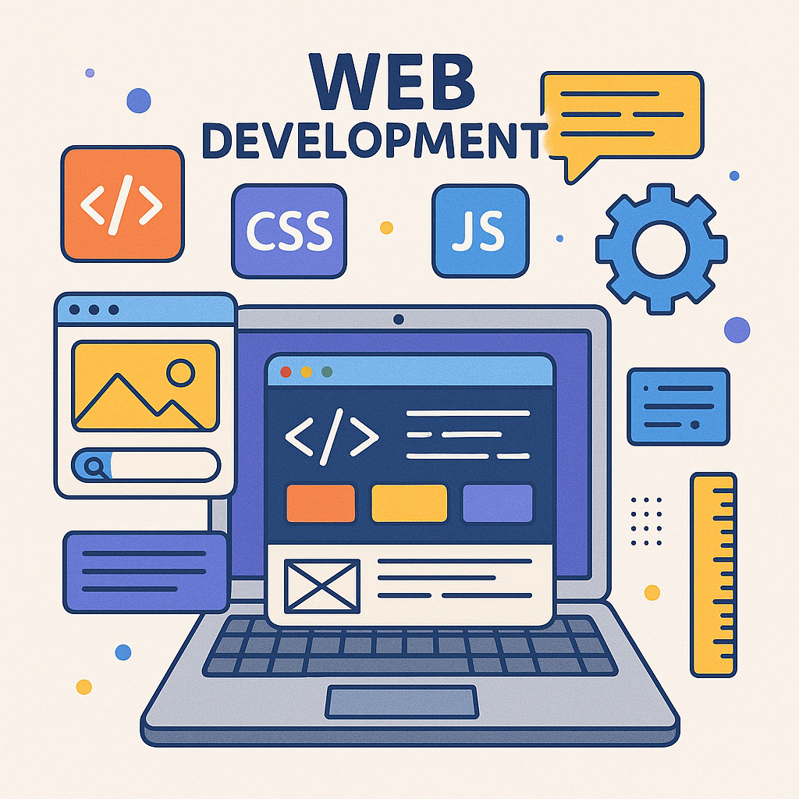

アクセシブルでバイリンガルなウェブサイトを構築する（英語＆日本語）
アクセシビリティ設計とローカライゼーションの重要性、そして日本市場向けにポートフォリオサイトを バイリンガル化したプロセスについての振り返り。
Mediumで読む →

HCI研究者・Web開発者
私はロチェスター工科大学（RIT）でHCI（Human-Computer Interaction）の修士号を取得した研究者として、 アクセシビリティとイノベーションを結びつけるインクルーシブテクノロジーの研究に取り組んでいます。 ユーザー中心設計、ユーザビリティテスト、そして生成AIを活用したデジタル公平性の向上を主な研究テーマとしています。 最近のキャップストーンプロジェクトでは、聴者とろう者・難聴者（d/DHH）の間のコミュニケーションギャップを、 音声認識とタイピング入力を組み合わせたマルチモーダル設計で橋渡しする研究を行いました。 この研究は現在、CHI 2026に投稿中です。キャップストーンレポートを見る
研究、広報・マーケティング、Webデザイン、地域コミュニティ連携、カスタマーサービスなど多様な職務経験を活かし、 ユーザー調査、フォーカスグループ、アクセシビリティデザイン、批判的分析などの技術的・研究的スキルを有しています。 英語と日本語のバイリンガルとして、国際的な教育・サービス経験を活かしたグローバルな視点を持っています。
現在、以下の分野で新たな機会を探しています：
テクノロジー、包摂性、そして人間体験の交差点で活動し、 多様なコミュニティに実際の変化をもたらすプロジェクトを推進しています。 アクセシブルで人間中心のテクノロジーに情熱を持つ方は、ぜひつながりましょう。
このプロジェクトはNSF支援のAWARE-AIプログラムの一環で、私はリーダーを務めています。 チームでは、生成AIを活用して科学論文の図表により良い代替テキストを生成する方法の有効性を検証しています。 WIP／ポスター発表

このキャップストーン研究では、 キオスク型マルチモーダル会話ツール を設計し、音声入力とタイピング入力を組み合わせた使いやすさとアクセシビリティを調査しました。 この研究はCHI 2026に投稿済みです。

アクセシビリティ、インクルーシブデザイン、ヒューマンセンタードAIに関する代表的な論文・発表を掲載しています。
RIT情報学部（iSchool）のHCI研究ページを再設計し、コンテンツとデザインを更新しました。広報・学生エンゲージメント担当コーディネーターとしてこのプロジェクトを主導しました。

この動画は、パンデミック中に実施されたバーチャルオープンハウスで、学生や保護者がiSchoolについて理解できるように作成されました。Premiere Proを使用して映像編集を行いました。
INSPIREは、障害のある教員の研究・教育を支援するRITの取り組みです。RITのブランドガイドラインと提供デザインツールを活用し、HTMLで公式サイトを設計・構築しました。INSPIRE体験ページでは、障害のある教員や障害学生を教える教員の体験を紹介しています。

リソースの限られたK-12学校向けに、教師が無料で利用できる生成AI教材やワークショップを設計中です。AIを活用して教育機会の公平性を高めることを目指しています。

2022年度卒業生を祝うために制作された動画です。卒業式前に撮影した映像と当日の様子を編集し、Premiere Proで仕上げました。現地に参加できなかった国際的な家族にも好評でした。
当時の学部長を含む新規教員採用を目的としたウェブページを設計しました。現職の教員・職員から情報を収集し、RITブランドガイドラインに沿って1ページ構成のデザインを作成しました。

ImagineRITで紹介された学生プロジェクト「Caption Mask」の紹介映像です。マイクを使用して録音し、Premiere Proで編集しました。このプロジェクトは地元の病院にも招待され、社会的に大きな貢献を果たしました。
試験における人的リーダー支援を減らし、リソースを効率的に活用することを目的に、自然音声リーダーを利用した音声読み上げ手順書を作成しました。現在ではDSO（障害学生支援オフィス）の主要リソースとして活用されています。

ISTE-646はWebテクノロジーと基礎IIの科目で、HTML、CSS、JavaScriptに加え、PHP、React、SQLなどを学びました。個人・グループ両方の課題とプロジェクトをウェブサイトで公開しています。

RITの教員向けに、学術ポートフォリオサイトの設計と開発を支援しました（例：Narmala Shenoy博士、Catherine Beaton教授）。2024〜2025年度のプロジェクトです。
アクセシビリティ、バイリンガルUX、そしてインクルーシブなHCIデザインに関する考察。
アクセシビリティ設計とローカライゼーションの重要性、そして日本市場向けにポートフォリオサイトを バイリンガル化したプロセスについての振り返り。
Mediumで読む →